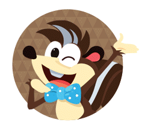
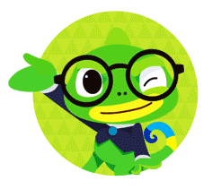
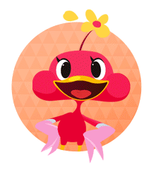

제작정보
빨간펜 스마트 라이브러리의 집필진을 소개합니다.
-
작가 조신일
저서 : 과학 1권, 2권, 3권
약력 : 이 글을 쓰신 조신일 작가님은 고려대학교 생물학과를 졸업하고 서울여자대학교 대학원 생물학과에서 ‘한국산 물장군의 생태학적 연구’로 석사 학위를 받았습니다. 현재 같은 학교 대학원에서 자연 습지와 인공 습지에 서식하는 수서곤충의 종 비교 분석을 주제로 박사 학위 논문을 쓰고 있습니다. 서울대공원 동물기획과에서 연구원으로 근무하며 곤충의 분류 및 생태 연구, 곤충관 운영, 자연 학습 프로그램을 개발하여 어린이 교육을 하고 있습니다. -
작가 지옥정
저서 : 과학 1권, 2권, 3권
약력 : 이화여자대학교 유아교육학과를 졸업하고, 같은 학교 대학원에서 유아교육으로 석사 학위를, 한국교원대학교 대학원에서 교육과정으로 박사 학위를 받았습니다. 현재 충주대학교 유아교육학과 교수로 재직하면서 유아교육 현장과 연계하여 프로젝트 접근법을 통한 자연친화교육의 실현을 위해 노력하고 있습니다. 쓴 책으로 <유아기 자연친화교육> 등이 있습니다. -
작가 신성민
저서 : 과학 1권, 2권, 3권
약력 : 이 글을 쓰신 조신일 작가님은 고려대학교 생물학과를 졸업하고 서울여자대학교 대학원 생물학과에서 ‘한국산 물장군의 생태학적 연구’로 석 사 학위를 받았습니다. 현재 같은 학교 대학원에서 자연 습지와 인공 습지에 서식하는 수서곤충의 종 비교 분석을 주제로 박사 학위 논문을 쓰고 있습 니다. 서울대공원 동물기획과에서 연구원으로 근무하며 곤충의 분류 및 생태 연구, 곤충관 운영, 자연 학습 프로그램을 개발하여 어린이 교육을 하고 있습니다.
빨간펜 스마트 라이브러리의 집필진을 소개합니다.
-
과학
31권
1권에 들어간 저작권은 텍스트 형태로 줄글로 쭉이어서 쓴다. 단위는 1권 단위이다. 이칸에 모든 것이 들어간다. 1권에 들어간 저작권은 텍스트 형태로 줄글로 쭉이어서 쓴다. 단위는 1권 단위이다. 이칸에 모든 것이 들어간다. 1권에 들어간 저작권은 텍스트 형태로 줄글로 쭉이어서 쓴다. 단위는 1권 단위이다. 이칸에 모든 것이 들어간다. 1권에 들어간 저작권은 텍스트 형태로 줄글로 쭉이어서 쓴다. 단위는 1권 단위이다. 이칸에 모든 것이 들어간다. 1권에 들어간 저작권은 텍스트 형태로 줄글로 쭉이어서 쓴다. 단위는 1권 단위이다. 이칸에 모든 것이 들어간다. 1권에 들어간 저작권은 텍스트 형태로 줄글로 쭉이어서 쓴다. 단위는 1권 단위이다. 이칸에 모든 것이 들어간다. -
과학
32권
1권에 들어간 저작권은 텍스트 형태로 줄글로 쭉이어서 쓴다. 단위는 1권 단위이다. 이칸에 모든 것이 들어간다. 1권에 들어간 저작권은 텍스트 형태로 줄글로 쭉이어서 쓴다. 단위는 1권 단위이다. 이칸에 모든 것이 들어간다. 1권에 들어간 저작권은 텍스트 형태로 줄글로 쭉이어서 쓴다. 단위는 1권 단위이다. 이칸에 모든 것이 들어간다. 1권에 들어간 저작권은 텍스트 형태로 줄글로 쭉이어서 쓴다. 단위는 1권 단위이다. 이칸에 모든 것이 들어간다. 1권에 들어간 저작권은 텍스트 형태로 줄글로 쭉이어서 쓴다. 단위는 1권 단위이다. 이칸에 모든 것이 들어간다. 1권에 들어간 저작권은 텍스트 형태로 줄글로 쭉이어서 쓴다. 단위는 1권 단위이다. 이칸에 모든 것이 들어간다. -
예체능
1권
1권에 들어간 저작권은 텍스트 형태로 줄글로 쭉이어서 쓴다. 단위는 1권 단위이다. 이칸에 모든 것이 들어간다. 1권에 들어간 저작권은 텍스트 형태로 줄글로 쭉이어서 쓴다. 단위는 1권 단위이다. 이칸에 모든 것이 들어간다. 1권에 들어간 저작권은 텍스트 형태로 줄글로 쭉이어서 쓴다. 단위는 1권 단위이다. 이칸에 모든 것이 들어간다. 1권에 들어간 저작권은 텍스트 형태로 줄글로 쭉이어서 쓴다. 단위는 1권 단위이다. 이칸에 모든 것이 들어간다. 1권에 들어간 저작권은 텍스트 형태로 줄글로 쭉이어서 쓴다. 단위는 1권 단위이다. 이칸에 모든 것이 들어간다. 1권에 들어간 저작권은 텍스트 형태로 줄글로 쭉이어서 쓴다. 단위는 1권 단위이다. 이칸에 모든 것이 들어간다.
우당탕 월드에서 즐겁고 짜릿한 모험을 즐기는
바나몽과 우당탕 친구들을 만나 볼까요?
북극성과 신비의 별이 100년에 한 번씩 만나는 어느 날! 4차원 비밀의 숲으로 향하는 우당탕 게이트가 열린다. 평범한 숲 속의 동물들은 그 신비의 문을 알아차리지 못한다. 4차원 비밀의 숲 우당탕 월드! 이곳은 매일매일 즐겁고 신 나는 모험이 일어나는 곳이다. 이곳에 살고 있는 바나몽과 우당탕 친구들은 우당탕 월드 곳곳을 누비며 즐겁고 짜릿한 모험을 즐긴다. 그리고 위대한 모험을 할 때마다 우당탕 배지를 획득할 수 있다. 바나몽과 우당탕 친구들은 오늘도 신나는 모험을 통해 서로를 이해하고 진정한 친구가 되어가는 법을 배우면서 인생에 필요한 지혜와 지식을 습득해간다. 과연 오늘은 어떤 신나는 모험이 바나몽과 우당탕 친구들을 기다리고 있을까?
-

컹키
우당탕 월드의 장난꾸러기인 바나몽은 가는 곳마다 우당탕 사건을 남기는 친구이다. 오늘은 어떤 장난을 칠까 고민하는 것이 일! 밤마다 장난 칠 궁리를 하느라 늘 수면 부족이라서 까칠하다나? 바나몽은 바나나 모양의 뿅망치(바나망치)로 친구들을 ‘뿅~!’ 때리면 3초간 멈추게 된다고 철석같이 믿고 있지만, 사실 친구들은 일부러 얼음이 된 것처럼 장난을 받아주고 있는 것이다. 소심한 겁쟁이 푸치를 자주 괴롭히고, 유일하게 컹키의 방귀냄새에 약한 모습을 보이는 바나몽은 오늘 또 어떤 장 난을 치고 있을까?
-

잡스온
우당탕 월드의 장난꾸러기인 바나몽은 가는 곳마다 우당탕 사건을 남기는 친구이다. 오늘은 어떤 장난을 칠까 고민하는 것이 일! 밤마다 장난 칠 궁리를 하느라 늘 수면 부족이라서 까칠하다나? 바나몽은 바나나 모양의 뿅망치(바나망치)로 친구들을 ‘뿅~!’ 때리면 3초간 멈추게 된다고 철석같이 믿고 있지만, 사실 친구들은 일부러 얼음이 된 것처럼 장난을 받아주고 있는 것이다. 소심한 겁쟁이 푸치를 자주 괴롭히고, 유일하게 컹키의 방귀냄새에 약한 모습을 보이는 바나몽은 오늘 또 어떤 장 난을 치고 있을까?
-

워핑
우당탕 월드의 장난꾸러기인 바나몽은 가는 곳마다 우당탕 사건을 남기는 친구이다. 오늘은 어떤 장난을 칠까 고민하는 것이 일! 밤마다 장난 칠 궁리를 하느라 늘 수면 부족이라서 까칠하다나? 바나몽은 바나나 모양의 뿅망치(바나망치)로 친구들을 ‘뿅~!’ 때리면 3초간 멈추게 된다고 철석같이 믿고 있지만, 사실 친구들은 일부러 얼음이 된 것처럼 장난을 받아주고 있는 것이다. 소심한 겁쟁이 푸치를 자주 괴롭히고, 유일하게 컹키의 방귀냄새에 약한 모습을 보이는 바나몽은 오늘 또 어떤 장 난을 치고 있을까?
-

바나몽
우당탕 월드의 장난꾸러기인 바나몽은 가는 곳마다 우당탕 사건을 남기는 친구이다. 오늘은 어떤 장난을 칠까 고민하는 것이 일! 밤마다 장난 칠 궁리를 하느라 늘 수면 부족이라서 까칠하다나? 바나몽은 바나나 모양의 뿅망치(바나망치)로 친구들을 ‘뿅~!’ 때리면 3초간 멈추게 된다고 철석같이 믿고 있지만, 사실 친구들은 일부러 얼음이 된 것처럼 장난을 받아주고 있는 것이다. 소심한 겁쟁이 푸치를 자주 괴롭히고, 유일하게 컹키의 방귀냄새에 약한 모습을 보이는 바나몽은 오늘 또 어떤 장 난을 치고 있을까?